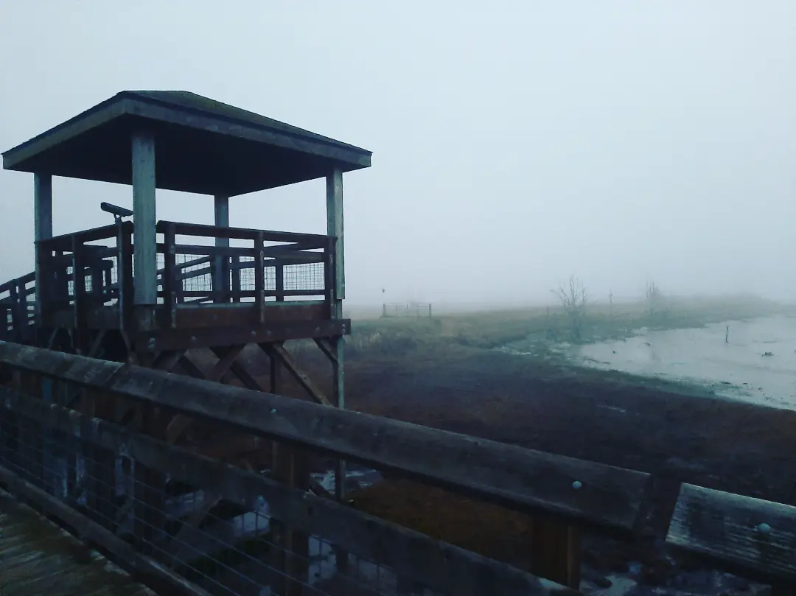

Welcome to the Pacific Northwest

Hidden among ancient forests and volcanic peaks, Washington State is a top tier
destination for nature lovers and city folk alike. Whether you're searching
for the solitude of forests or the quaint allure of a small town, Washington
has something for everyone!
Thanks for visiting my website! Feel free to explore the various featured destinations in the destinations tab, local stories in the folklore section, landscapes in the gallery, and some of my experiences in the blog.